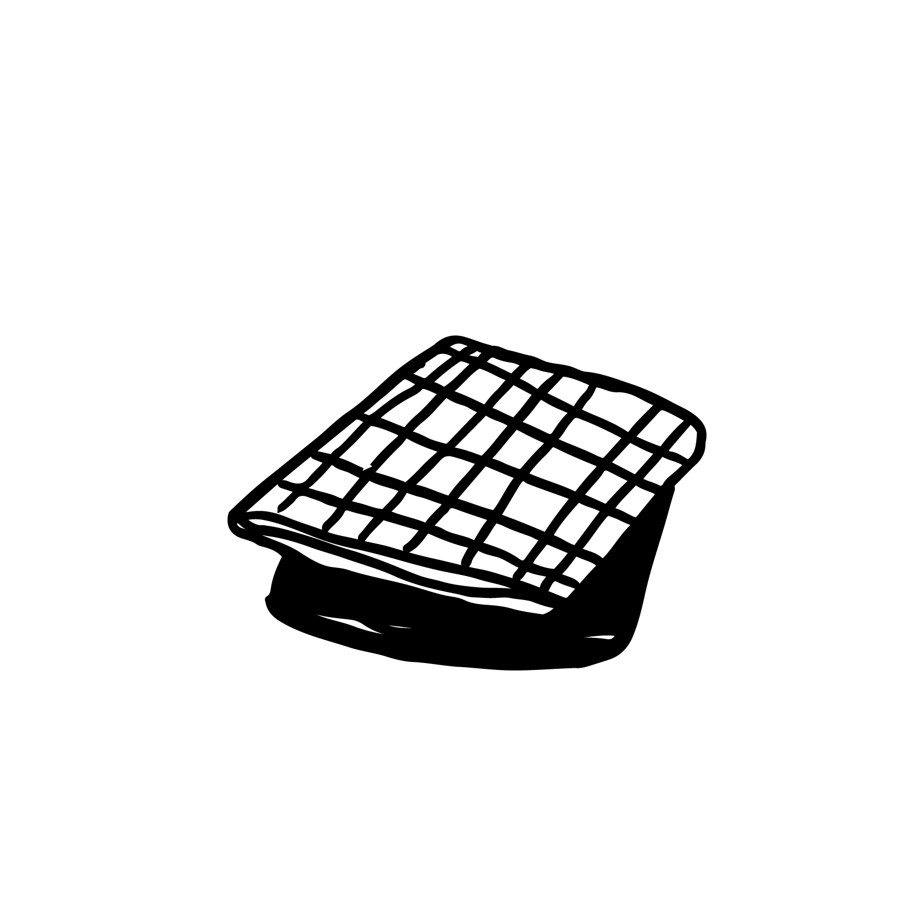
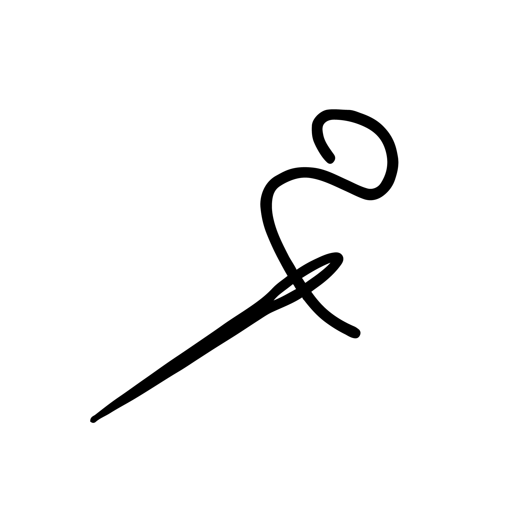
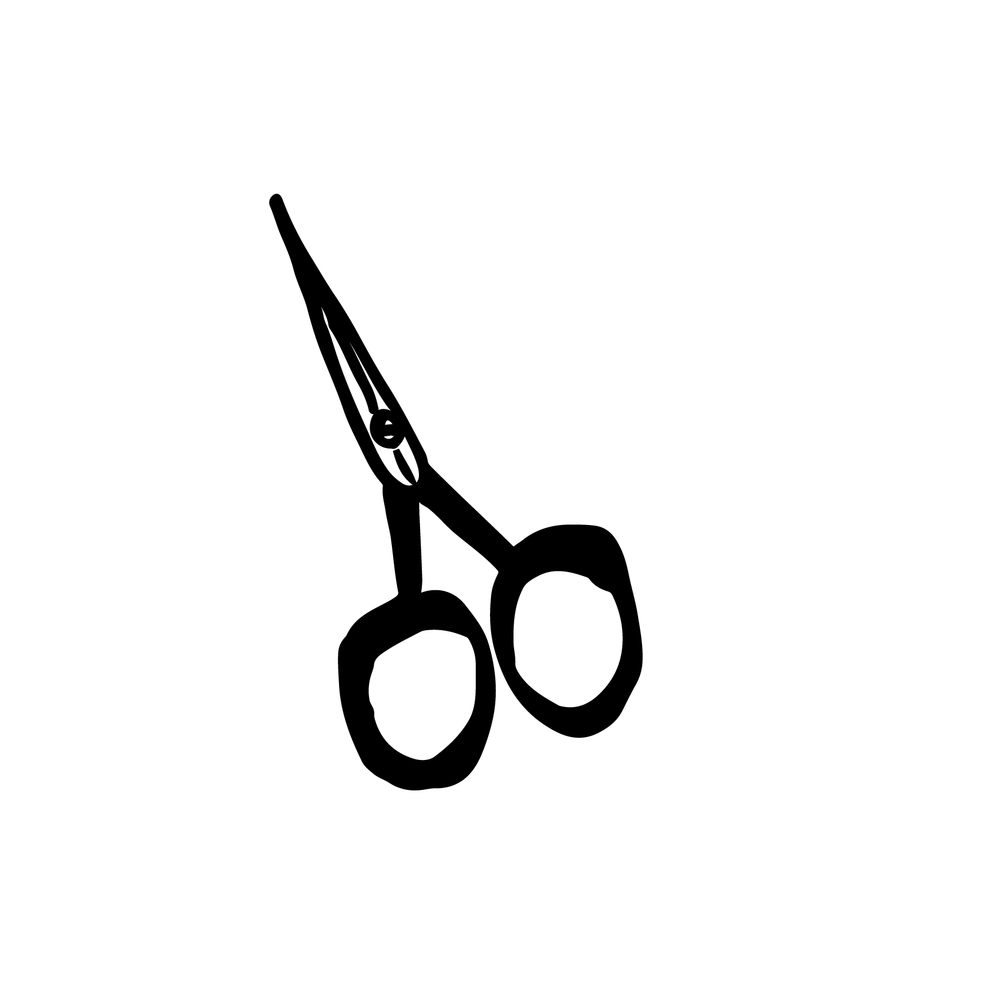
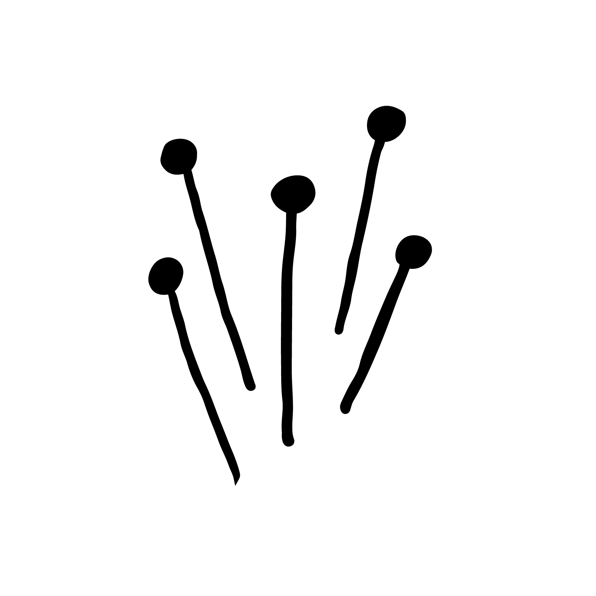
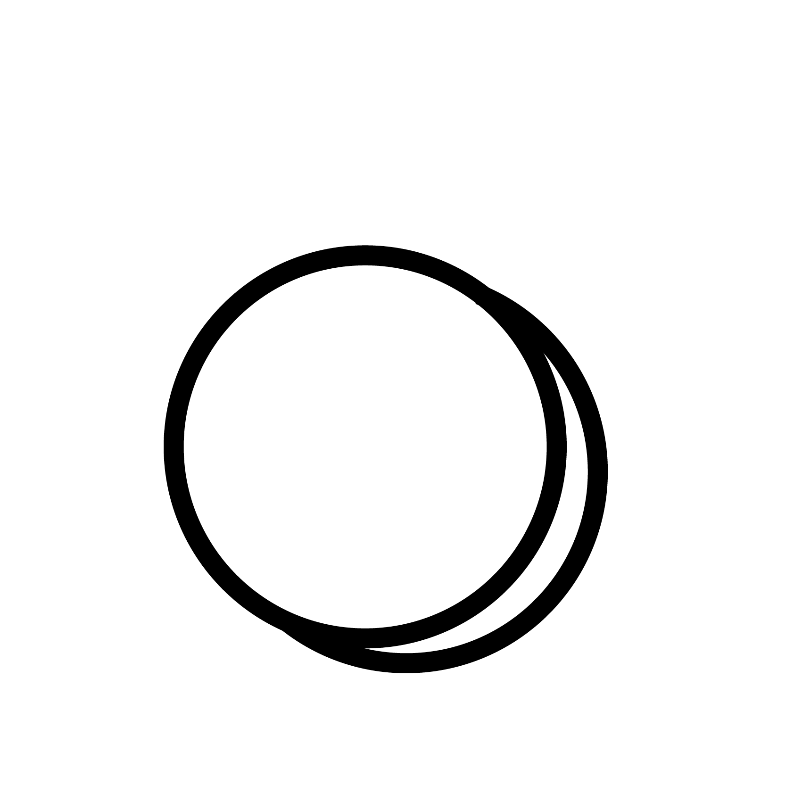
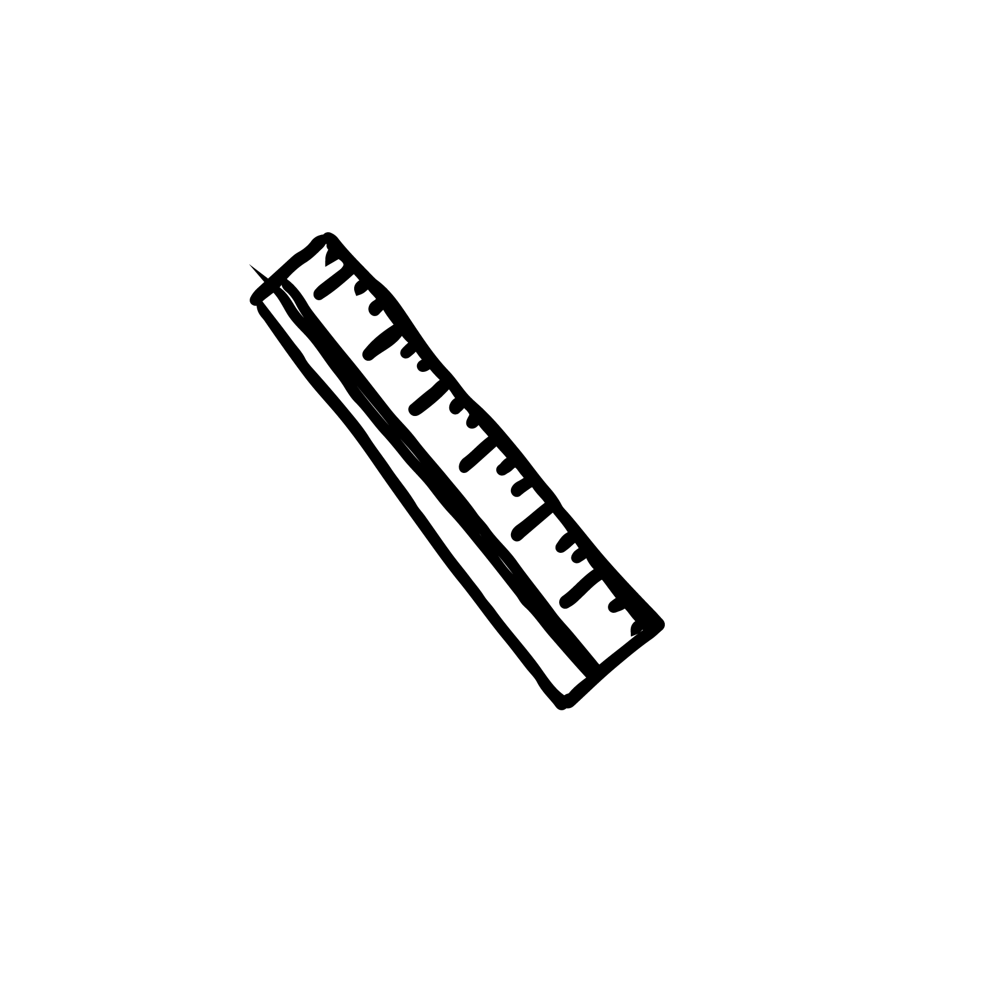
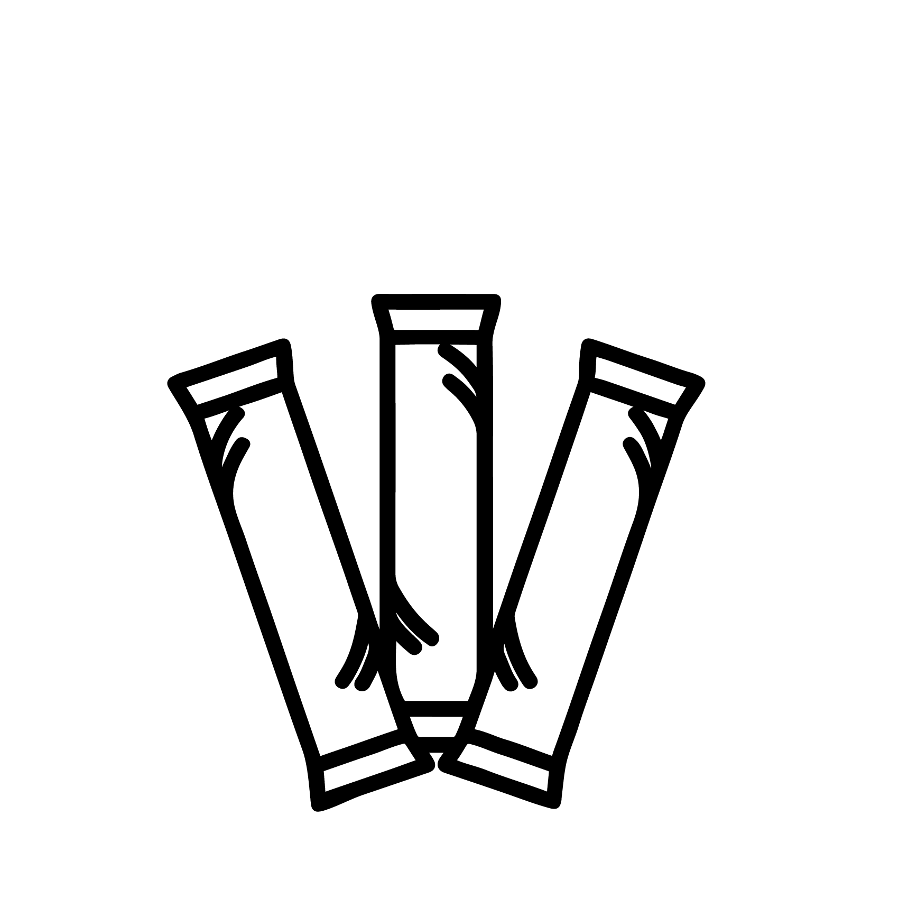
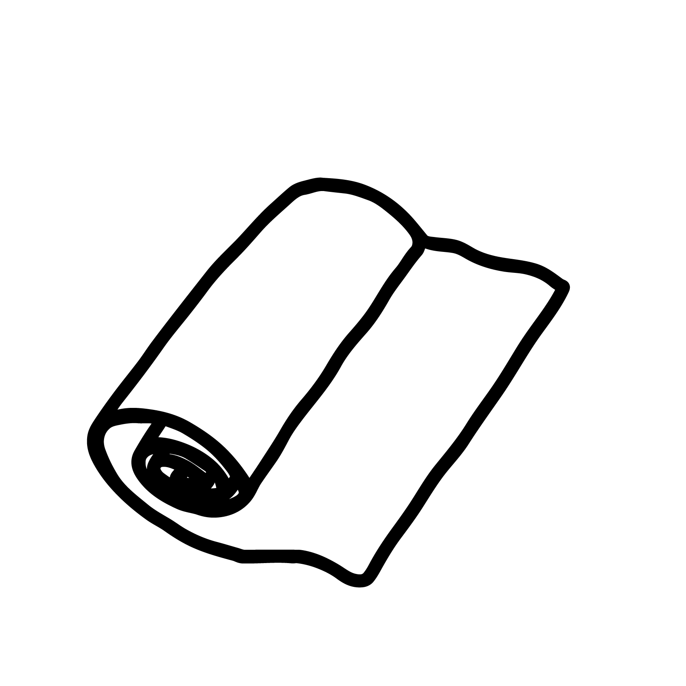

Video tutorial
Materiales que necesitarás:

Tela Novak y Piqué
 Máquina de coser
Máquina de coser

Agujas

Tijeras

Alfiles

Imán

Regla

Tiras de Icepacks
 Manguera de PVC
Manguera de PVC

Aislante térmico